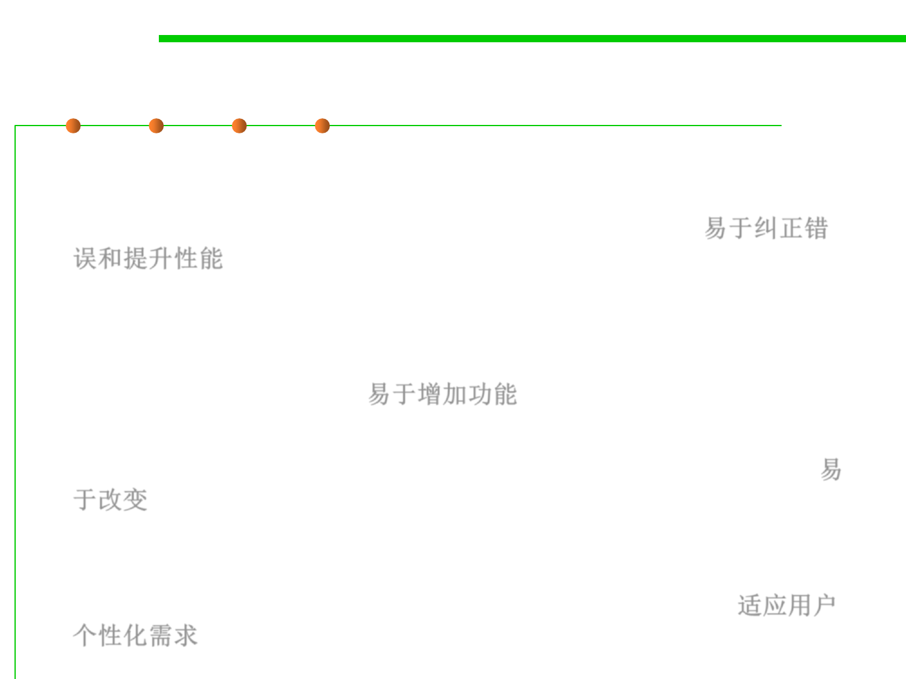

6.1 Metrics and Construction Principles for Maintainability
Many names of maintainability
Ready for Change
Ready for Extension
▪ Maintainability—“The ease with which a software system or
component can be modified to correct faults, improve performance,
or other attributes, or adapt to a changed environment”. 易于纠正错
误和提升性能
▪ Extensibility — Software design/implementation takes future
growth into consideration and is seen as a systemic measure of the
ability to extend a system and the level of effort required to
implement the extension. 易于增加功能
▪ Flexibility —The ability of software to change easily in response to
user requirements, external technical and social environments, etc. 易
于改变
▪ Adaptability — The ability of an interactive system (adaptive
system) that can adapt its behavior to individual users based on
information acquired about its user(s) and its environment. 适应用户
个性化需求